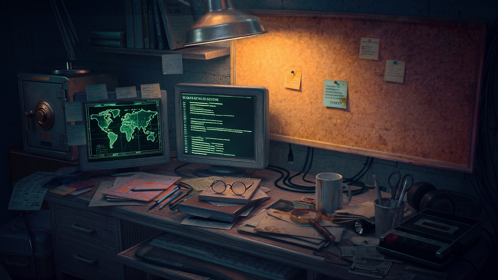

Please rotate your device to landscape mode for the best experience
×
KANAPUTZ OBSERVATORY — LIVE SIGHTING FEED
SIGNAL: ACTIVE
KANAPUTZ OBS. NETWORK
ACTIVE INVESTIGATION BOARD
◂ Prev
Next ▸
NO TAPE LOADED
▶
■
◀◀
LOCKED
SOURCE MONITORING SYSTEM